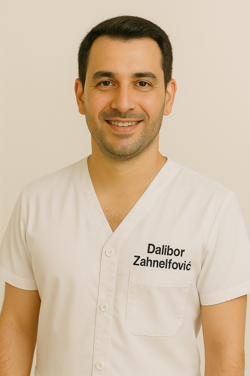

Wir zaubern Ihnen Ihr Lächeln ins Gesicht

Wir bieten die beste Ausstattung

Wir haben die höchste Kundenzufriedenheit
Sämtliche Abbildungen wurden mithilfe von ChatGPT generiert. Ähnlichkeiten mit existierenden Personen sind unbeabsichtigt und rein zufällig
- 1990–1996: Studium der Zahnmedizin an der Universität Heidelberg
- 1998: Promotion zum Dr. med. dent. mit Auszeichnung
- 2002: Fachzahnarzt für Oralchirurgie
- 2003–2009: Oberarzt an der Universitätsklinik Freiburg, Abteilung für MKG-Chirurgie
- 2010: Habilitation und Ernennung zum außerplanmäßigen Professor
- 2011: Gründung der eigenen Praxis für Zahnmedizin und Implantologie in Augsburg
- Seit 2013: Lehrbeauftragter für Implantologie und zahnärztliche Chirurgie an der Universität Tübingen
- Laufend: Fachveröffentlichungen und Vorträge auf nationalen und internationalen Kongressen
- 1992–1998: Studium der Zahnmedizin an der Freien Universität Berlin
- 2000: Promotion zur Dr. med. dent. mit Schwerpunkt Parodontologie
- 2003: Anerkennung als Fachzahnärztin für Parodontologie
- 2004–2010: Oberärztin an der Poliklinik für Zahnerhaltung und Präventivzahnmedizin in München
- 2011: Habilitation und Berufung zur außerplanmäßigen Professorin
- Seit 2012: Gemeinschaftspraxis mit Prof. Dr. Klaus Zahnrichter in Augsburg
- Seit 2014: Lehrbeauftragte für Parodontologie an der Universität Heidelberg
- Laufend: Engagement in der Fortbildung junger Zahnärztinnen und Mitwirkung an Fachpublikationen
- 2014–2017: Ausbildung zur Zahnmedizinischen Fachangestellten (ZFA) in Stuttgart
- Seit 2017: Tätigkeit als Zahnarzthelferin mit Schwerpunkt Prophylaxe und Patientenbetreuung
- Fortbildungen: Professionelle Zahnreinigung, Assistenz bei chirurgischen Eingriffen
- Seit 2021: Teammitglied in der Praxis Prof. Dr. Zahnrichter
- Stärken: Freundlichkeit, Sorgfalt, einfühlsamer Umgang mit Patientinnen und Patienten

- 2012–2015: Ausbildung zum Zahnmedizinischen Fachangestellten (ZFA) in Nürnberg
- Berufserfahrung: Mitarbeit in verschiedenen Praxen mit Schwerpunkt chirurgische Assistenz und Implantologie
- 2018: Fortbildung zum zertifizierten Prophylaxe-Assistenten
- Seit 2022: Teammitglied in der Praxis Prof. Dr. Zahnrichter
- Stärken: Technisches Verständnis, ruhiges Auftreten, engagierte Patientenbetreuung
- 1994–1997: Ausbildung zur Bürokauffrau/Sekretärin in Karlsruhe
- Berufserfahrung: Über 20 Jahre im medizinischen Empfangs- und Verwaltungsbereich
- Seit 2018: Rezeptionistin in der Praxis Prof. Dr. Zahnrichter
- Aufgaben: Terminvergabe, Patientenempfang, Abrechnung und Praxisorganisation
- Stärken: Freundlichkeit, Organisationstalent, diskreter und sicherer Umgang mit Patientendaten
- 2010–2013: Ausbildung zur Zahnmedizinischen Fachangestellten (ZFA) in Mannheim
- 2016: Weiterbildung zur Prophylaxe-Assistentin mit Schwerpunkt professionelle Zahnreinigung
- Berufserfahrung: Über 10 Jahre tätig in Stuhlassistenz, Patientenbetreuung und Prophylaxe
- Seit 2020: Teammitglied der Praxis Prof. Dr. Zahnrichter
- Sonderrolle: Inoffizielle Teamleitung der zahnmedizinischen Assistenz („Nicht-Zahnärzte“)
- Stärken: Fachliche Kompetenz, Verlässlichkeit, klare Kommunikation und Teamorientierung